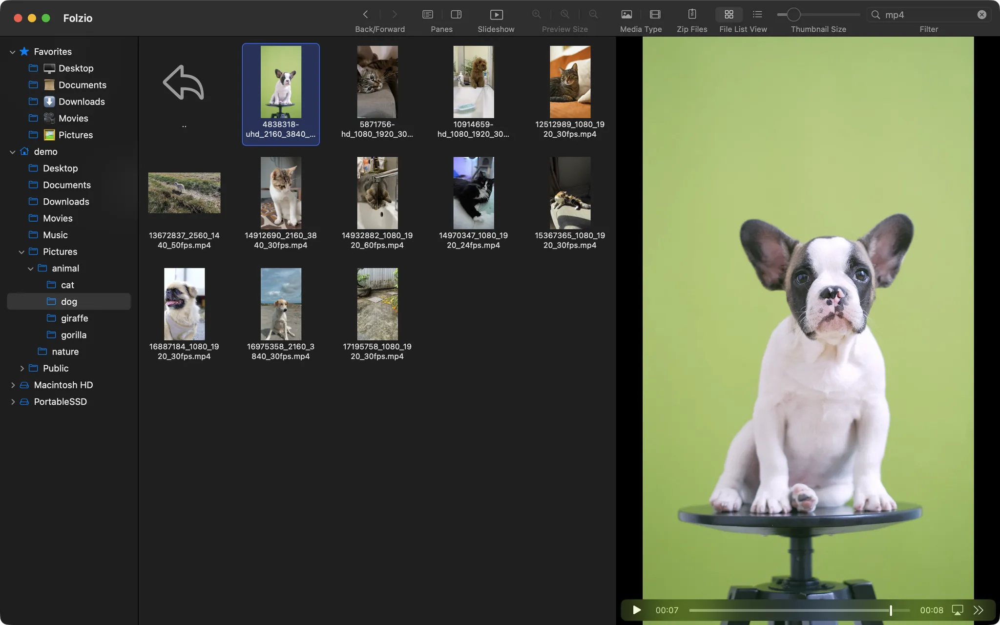
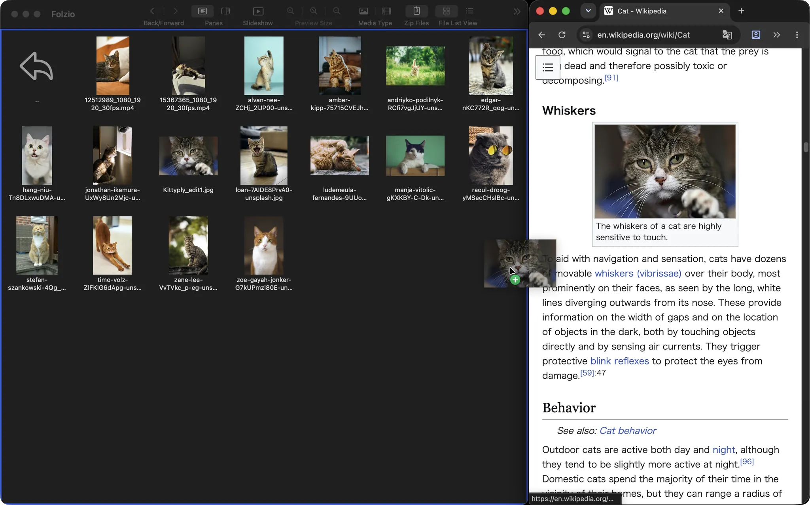
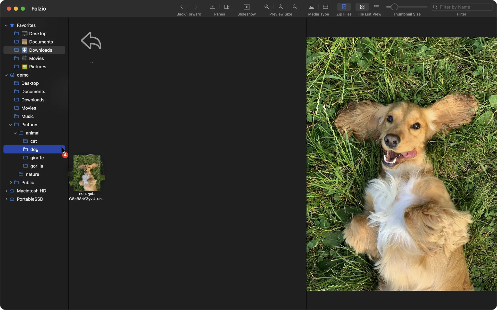
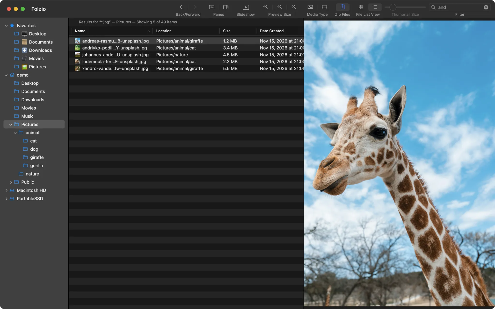
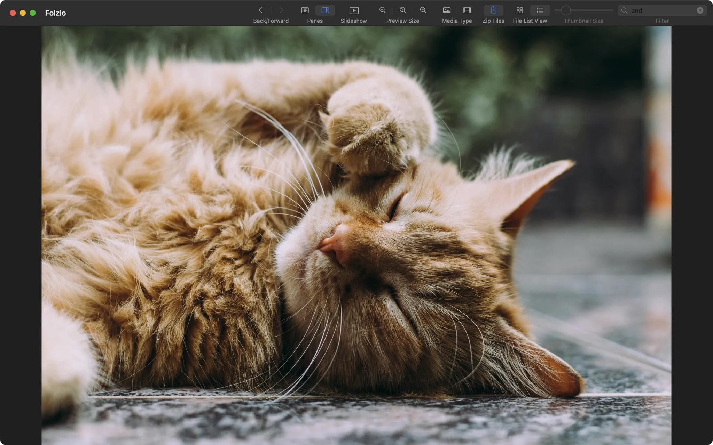
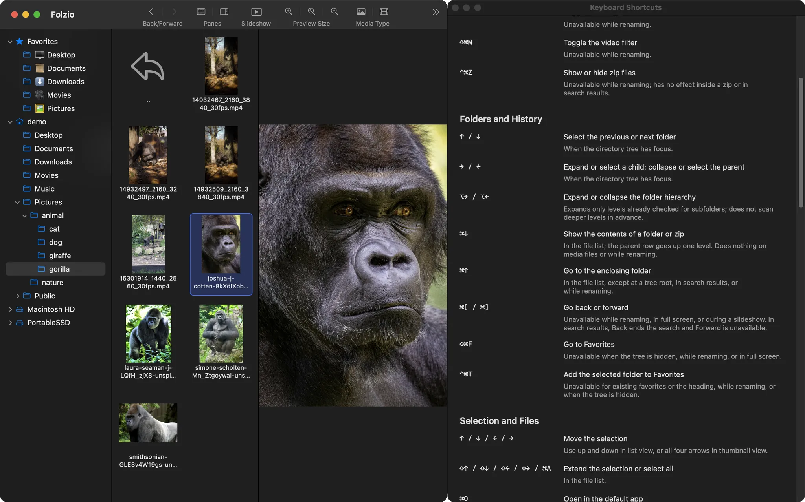
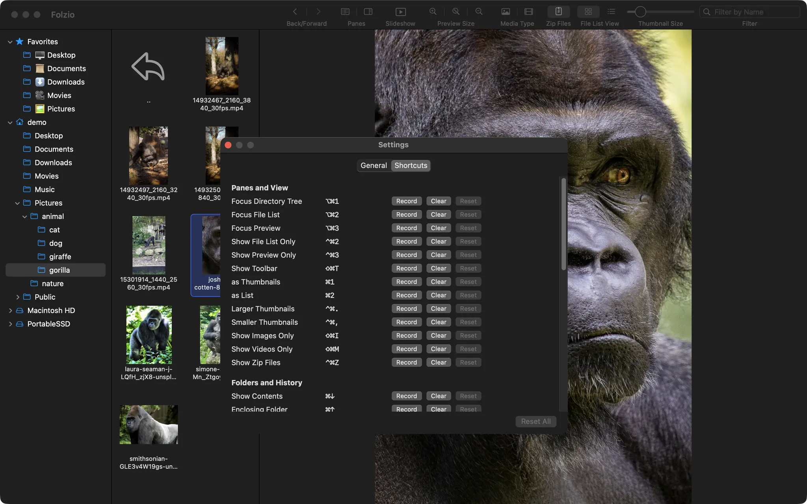

3つのペイン。ひとつのウインドウ。
たどる。
フォルダツリーで移動。よく開くフォルダはお気に入りに。
見渡す。
サムネイルと一覧を ⌘1 と ⌘2 で切り替え。
確かめる。
選んだものを、すぐに大きく。
画像も動画も、同じ一覧で。
写真、アニメーション GIF、WebP、動画をひとつの一覧に。動画は自動再生もループも。Space でクイックルック。

zip は、展開せずにそのまま。
zip の中のフォルダをたどって、画像も動画もプレビュー。日本語のファイル名は文字コードを自動で判別して表示し、動画は zip から直接再生します。
Web の画像を、ドラッグで保存。
Safari や Chrome の画像を、フォルダへドラッグ。「画像をコピー」の後に ⌘V でも。写真アプリの写真や動画も受け取れます。

見ながら、整える。
コピーも、移動も、名前の変更も。使い慣れたショートカットとドラッグ＆ドロップで。Finder との受け渡しも、複数のフォルダのまとめての移動も。

入力するそばから、見つかる。
⌥⌘F でサブフォルダまで検索し、結果ごとに場所も表示。ツールバーに入力すれば、検索結果も含めて、どの一覧もその場で絞り込めます。

見ることに、集中する。
ピンチで拡大。プレビューだけの表示も、フルスクリーンも。クロスフェード、スライド、ズームの切り替え効果でスライドショーを。

自分の使い方に、合わせる。
メニューのショートカットを変更し、ツールバーを並べ替え、必要な列だけを表示。ショートカット一覧は別のウインドウで開いたままに。


ファイルは、あなたの Mac に。
Folzio のアプリは、ネットワーク通信をせずに Mac の中だけで動きます。アカウントも、アップロードもありません。
Folzio を、あなたの Mac に。
macOS 15 以降、Apple silicon 搭載の Mac が必要です。Intel 搭載の Mac には対応していません。
最新版をダウンロードGitHub Releases から
Folzio-vX.Y.Z-macos-arm64.zipをダウンロード。展開して、Folzio をアプリケーションフォルダへ。
開く。macOS にブロックされたら、システム設定 → プライバシーとセキュリティ で「このまま開く」を選びます。詳しく ›